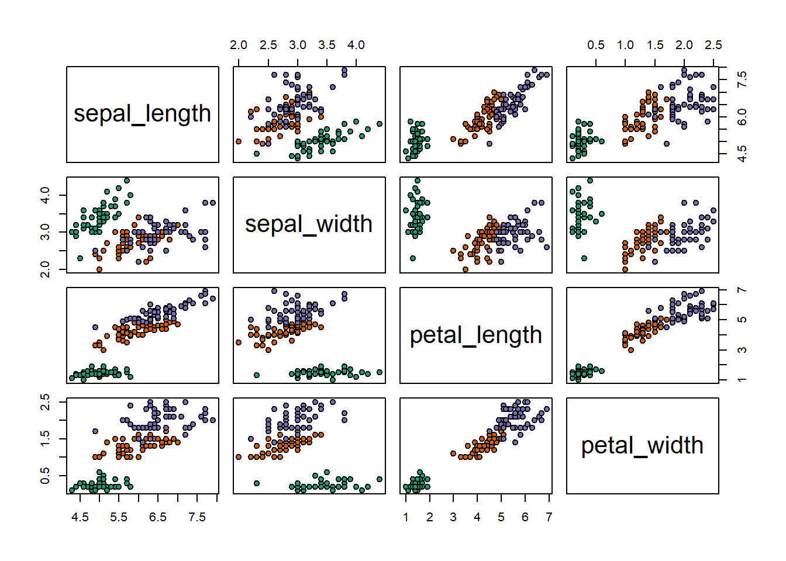
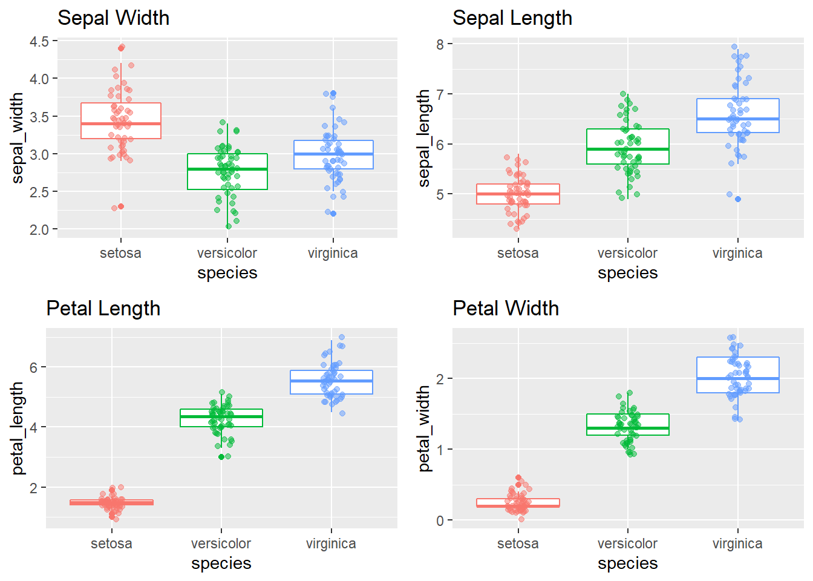

library(tidyverse)
library(ggplot2)The Iris flower data set or Fisher’s Iris data set is a multivariate data set introduced by the British statistician, eugenicist, and biologist Ronald Fisher in his 1936 paper The use of multiple measurements in taxonomic problems as an example of linear discriminant analysis.
The data set consists of 50 samples from each of three species of Iris (Iris setosa, Iris virginica and Iris versicolor). Four features were measured from each sample: the length and the width of the sepals and petals, in centimeters. Based on the combination of these four features, Fisher developed a linear discriminant model to distinguish the species from each other.
head(iris)iris_df = iris %>% rename_all(janitor::make_clean_names)
str(iris_df)## 'data.frame': 150 obs. of 5 variables:
## $ sepal_length: num 5.1 4.9 4.7 4.6 5 5.4 4.6 5 4.4 4.9 ...
## $ sepal_width : num 3.5 3 3.2 3.1 3.6 3.9 3.4 3.4 2.9 3.1 ...
## $ petal_length: num 1.4 1.4 1.3 1.5 1.4 1.7 1.4 1.5 1.4 1.5 ...
## $ petal_width : num 0.2 0.2 0.2 0.2 0.2 0.4 0.3 0.2 0.2 0.1 ...
## $ species : Factor w/ 3 levels "setosa","versicolor",..: 1 1 1 1 1 1 1 1 1 1 ...pairs(iris_df[,-5], pch = 21,
bg = c("#1b9e77", "#d95f02", "#7570b3")[unclass(iris_df$species)])
summary(iris_df)## sepal_length sepal_width petal_length petal_width
## Min. :4.300 Min. :2.000 Min. :1.000 Min. :0.100
## 1st Qu.:5.100 1st Qu.:2.800 1st Qu.:1.600 1st Qu.:0.300
## Median :5.800 Median :3.000 Median :4.350 Median :1.300
## Mean :5.843 Mean :3.057 Mean :3.758 Mean :1.199
## 3rd Qu.:6.400 3rd Qu.:3.300 3rd Qu.:5.100 3rd Qu.:1.800
## Max. :7.900 Max. :4.400 Max. :6.900 Max. :2.500
## species
## setosa :50
## versicolor:50
## virginica :50
##
##
## plot_hist_by_species = function(col, colname) {
iris_df %>% ggplot(aes(x = species , y = {{col}}, color = species)) +
geom_boxplot() + geom_jitter( alpha = .5, position=position_jitter(w=0.1,h=0.1) ) +
theme(legend.position = "") + labs(title = colname)
}
p1 = plot_hist_by_species(sepal_width, "Sepal Width")
p2 = plot_hist_by_species(sepal_length, "Sepal Length")
p3 = plot_hist_by_species(petal_length, "Petal Length")
p4 = plot_hist_by_species(petal_width, "Petal Width")
gridExtra::grid.arrange(p1, p2, p3, p4)
library(VGAM)
model_1 = vglm( species ~ sepal_length + sepal_width + petal_length + petal_width, family=multinomial, iris_df)
summary(model_1)##
## Call:
## vglm(formula = species ~ sepal_length + sepal_width + petal_length +
## petal_width, family = multinomial, data = iris_df)
##
## Pearson residuals:
## Min 1Q Median 3Q Max
## log(mu[,1]/mu[,3]) -0.0003873 1.813e-10 6.194e-10 1.252e-06 0.0003643
## log(mu[,2]/mu[,3]) -1.9700374 -3.609e-04 -5.338e-06 4.763e-04 2.5601905
##
## Coefficients:
## Estimate Std. Error z value Pr(>|z|)
## (Intercept):1 35.490 22666.953 NA NA
## (Intercept):2 42.638 25.708 1.659 0.0972 .
## sepal_length:1 9.495 6729.217 NA NA
## sepal_length:2 2.465 2.394 1.030 0.3032
## sepal_width:1 12.300 3143.611 NA NA
## sepal_width:2 6.681 4.480 1.491 0.1359
## petal_length:1 -22.975 4799.227 -0.005 0.9962
## petal_length:2 -9.429 4.737 NA NA
## petal_width:1 -33.843 7583.502 NA NA
## petal_width:2 -18.286 9.743 NA NA
## ---
## Signif. codes: 0 '***' 0.001 '**' 0.01 '*' 0.05 '.' 0.1 ' ' 1
##
## Names of linear predictors: log(mu[,1]/mu[,3]), log(mu[,2]/mu[,3])
##
## Residual deviance: 11.8985 on 290 degrees of freedom
##
## Log-likelihood: -5.9493 on 290 degrees of freedom
##
## Number of Fisher scoring iterations: 21
##
## Warning: Hauck-Donner effect detected in the following estimate(s):
## '(Intercept):1', 'sepal_length:1', 'sepal_width:1', 'petal_length:2', 'petal_width:1', 'petal_width:2'
##
##
## Reference group is level 3 of the response# reference group:virginica
levels(iris_df$species)## [1] "setosa" "versicolor" "virginica"preds_probs = predict(model_1, type = "response")
preds = apply(preds_probs, MARGIN = 1, which.max)
species_fun = function(level) return(levels(iris$Species)[level])
preds_class = map_chr(preds, species_fun)
# confusion matrix
table("Predicted" = preds_class, "Actual" = iris_df$species )## Actual
## Predicted setosa versicolor virginica
## setosa 50 0 0
## versicolor 0 49 1
## virginica 0 1 49Description
A sample of 1182 individuals in the United-States for the choice of 4 alternative fishing modes. Format
Format
mode: recreation mode choice, one of : beach, pier, boat and charter,price.beach: price for beach modeprice.pier: price for pier modeprice.boat: price for private boat modeprice.charter: price for charter boat modecatch.beach: catch rate for beach modecatch.pier: catch rate for pier modecatch.boat: catch rate for private boat modecatch.charter: catch rate for charter boat modeincome: monthly incomeSource
Cameron A, Trivedi P (2005). Microeconometrics. Cambridge University Press. https://EconPapers.repec.org/RePEc:cup:cbooks:9780521848053
data("Fishing", package = "mlogit")